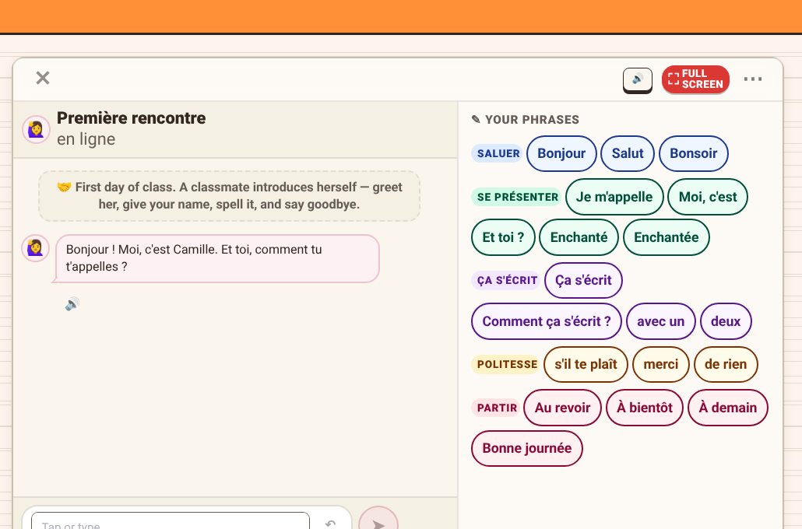

<section id="n08">
<h2 class="hd">Where AI fits in</h2>

<!-- scene 1 (s1–3): ideas → AI → software; the decisions stay with the teacher -->
<div id="sc1" class="abs" style="left:0;top:0;width:1920px;height:1080px">
  <div class="abs card" data-in="2:ideas" data-fx="pop" style="left:128px;top:250px;width:300px;height:290px">
    <span style="font-size:110px;line-height:1">💡</span><b>ideas</b>
  </div>
  <div class="abs" data-in="2:turn" data-fx="draw" data-dur="0.9" style="left:460px;top:476px;width:430px;height:12px;background:#9ca3af;border-radius:6px"></div>
  <p class="abs" data-in="2:turn+0.8" data-fx="fade" style="left:872px;top:448px;font-size:60px;line-height:1;color:#9ca3af">▶</p>
  <div id="ai" class="abs hand" data-in="1:=AI" data-fx="pop" style="left:600px;top:290px;width:150px;height:150px;border-radius:50%;background:#f8f4ff;border:5px solid #b17eff;font-size:80px;line-height:138px;text-align:center;color:#6b3fb8">AI</div>
  

  <div id="me" class="abs" data-in="3:decisions" data-fx="pop" style="left:128px;top:650px;width:200px;height:200px;border-radius:50%;background:#fff;border:5px solid #1f2430;font-size:110px;line-height:190px;text-align:center">🧑‍🏫</div>
  <div class="abs dec" data-in="3:goals" data-fx="rise" style="left:380px">
    <b>goals</b>
    <p class="pill" style="background:#eff8ff;border-color:#1ca6ff">28 · « ne … pas »</p>
    <p class="pill" style="background:#faf7e2;border-color:#fcdf00">29 · inviting</p>
  </div>
  <div class="abs dec" data-in="3:relate" data-fx="rise" style="left:760px">
    <b>how they relate</b>
    <svg width="300" height="150" viewBox="0 0 300 150" style="margin-top:6px">
      <line x1="70" y1="75" x2="230" y2="75" stroke="#6a7179" stroke-width="8" stroke-linecap="round"/>
      <circle cx="70" cy="75" r="56" fill="#eff8ff" stroke="#1ca6ff" stroke-width="6"/>
      <circle cx="230" cy="75" r="56" fill="#faf7e2" stroke="#fcdf00" stroke-width="6"/>
      <text x="70" y="92" text-anchor="middle" font-family="Patrick Hand" font-size="50" fill="#006baa">28</text>
      <text x="230" y="92" text-anchor="middle" font-family="Patrick Hand" font-size="50" fill="#1f2430">29</text>
    </svg>
  </div>
  <div class="abs dec" data-in="3:practise" data-fx="rise" style="left:1140px">
    <b>what to practise</b>
    <p style="font-size:44px;font-weight:700;margin-top:20px">« <u style="text-decoration:none;border-bottom:5px solid #1f2430;color:#9ca3af">&nbsp;?&nbsp;</u> sport »</p>
    <p style="display:flex;gap:18px;margin-top:16px"><span class="opt">le</span><span class="opt">la</span></p>
  </div>
</div>

<!-- scene 2 (s4–5): a system that can be revised and extended -->
<svg id="net" class="abs" style="left:128px;top:220px" width="1400" height="760" viewBox="0 0 1400 760"></svg>
<p id="pen" class="abs" style="left:0;top:0;font-size:64px;opacity:0">✏️</p>
<div id="zh" class="abs zh" data-in="5:Mandarin" data-fx="pop" style="left:1300px;top:230px;font-size:64px;font-weight:700;color:#9f5100;background:#fff4ed;border:5px solid #ff9037;border-radius:999px;padding:4px 34px">中文</div>

<p class="part">Where AI fits in</p>
<style>
#n08 .card{border-radius:28px;background:#faf7e2;border:4px solid #fcdf00;display:flex;flex-direction:column;align-items:center;justify-content:center;gap:16px}
#n08 .card b{font-size:40px}
#n08 .dec{top:620px;width:360px;height:280px;border-radius:26px;background:#fff;border:4px solid #1f2430;padding:22px 26px;display:flex;flex-direction:column;align-items:center}
#n08 .dec>b{font-size:36px;margin-bottom:14px}
#n08 .pill{font-size:32px;font-weight:500;padding:8px 22px;border-radius:999px;border:4px solid;margin-top:12px;white-space:nowrap}
#n08 .opt{font-size:40px;padding:4px 28px;border-radius:14px;background:#eff8ff;border:3px solid #1ca6ff}
</style>
<script>
window.SLIDE = function(){
  const $ = id => document.getElementById(id);
  // the teacher keeps the decisions: AI steps back a little
  A($('ai'), [{opacity:1},{opacity:.4}], CUE('3:decisions'), 0.6, 'forwards');
  A($('me'), [{boxShadow:'0 0 0 0 rgba(31,36,48,0)'},{boxShadow:'0 0 0 14px rgba(31,36,48,.18)'},{boxShadow:'0 0 0 0 rgba(31,36,48,0)'}], CUE('3:mine'), 1.2, 'none');
  A($('sc1'), [{opacity:1},{opacity:0}], CUE('4')-0.2, 0.6, 'forwards');

  // --- scene 2: the network of goals
  const S = $('net'), NS = 'http://www.w3.org/2000/svg';
  const el = (tag, at, par) => { const e = document.createElementNS(NS, tag); for (const k in at) e.setAttribute(k, at[k]); (par||S).appendChild(e); return e; };
  const gL = el('g', {}), gN = el('g', {});
  const N = { y1:[300,190,'y'], y2:[720,140,'y'], y3:[960,330,'y'],
              b1:[130,370,'b'], b2:[420,440,'b'], b3:[640,320,'b'], b4:[840,520,'b'], b5:[560,610,'b'],
              e1:[1060,590,'b'], e2:[1180,430,'y'],
              m1:[1130,170,'m'], m2:[1300,300,'m'], m3:[1320,560,'m'] };
  const E = [['y1','b1'],['y1','b2'],['y1','b3'],['y2','b3'],['y3','b3'],['y3','b4'],['b2','b5'],['b4','b5']];
  const EX = [['y3','e1'],['b4','e1'],['e1','e2'],['y3','e2']];
  const MX = [['y3','m1'],['y2','m1'],['e2','m2'],['e1','m3'],['m2','m3']];
  const col = { y:['#faf7e2','#fcdf00'], b:['#eff8ff','#1ca6ff'], m:['#fff4ed','#ff9037'] };
  const lines = (list, at, step) => list.forEach(([a,b],i) => {
    const [x1,y1] = N[a], [x2,y2] = N[b];
    const l = el('line', {x1,y1,x2,y2,stroke:'#9ca3af','stroke-width':7,'stroke-linecap':'round'}, gL);
    const len = Math.hypot(x2-x1, y2-y1);
    l.setAttribute('stroke-dasharray', len);
    A(l, [{strokeDashoffset:len},{strokeDashoffset:0}], at + i*step, 0.6);
  });
  const nodes = (keys, at, step) => keys.forEach((k,i) => {
    const [x,y,t] = N[k];
    const c = el('circle', {cx:x, cy:y, r:44, fill:col[t][0], stroke:col[t][1], 'stroke-width':7}, gN);
    c.style.transformOrigin = `${x}px ${y}px`; c.id = 'n_'+k;
    A(c, [{opacity:0, transform:'scale(.4)'},{opacity:1, transform:'scale(1.1)', offset:.7},{opacity:1, transform:'none'}], at + i*step, 0.6);
  });
  const t0 = CUE('4:system');
  lines(E, t0+0.3, 0.08);
  nodes(['y1','y2','y3','b1','b2','b3','b4','b5'], t0, 0.08);
  // revised: one goal is redrawn
  const tr = CUE('4:revised');
  const pen = $('pen'); const [px,py] = N.b3; pen.style.left = (128+px+20)+'px'; pen.style.top = (220+py-100)+'px';
  A(pen, [{opacity:0, transform:'translate(-20px,20px)'},{opacity:1, transform:'none'}], tr-0.2, 0.4);
  A(pen, [{opacity:1},{opacity:0}], tr+1.4, 0.4, 'forwards');
  A($('n_b3'), [{fill:'#eff8ff', stroke:'#1ca6ff'},{fill:'#1ca6ff', stroke:'#006baa'},{fill:'#eff8ff', stroke:'#1ca6ff'}], tr, 1.2, 'none');
  // extended: new goals join
  const te = CUE('4:extended');
  lines(EX, te+0.2, 0.12);
  nodes(['e1','e2'], te, 0.2);
  // Mandarin: a new set of requirements
  const tm = CUE('5:demanding');
  lines(MX, tm+0.2, 0.12);
  nodes(['m1','m2','m3'], tm, 0.25);
};
</script>
</section>
